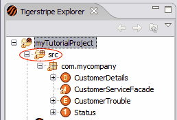

Tigerstripe follows a Model-Driven-Design approach, where the specifics of a Service Contract are modeled with Tigerstripe artifacts. These artifacts are used as input to the Tigerstripe engine to generate the corresponding Service Contract integration profiles and documentation.
Upon creation, a Tigerstripe project contains an Artifact Repository where all Tigerstripe artifacts are stored. This repository is the src directory, as represented in the following figure:

In the Artifact Repository, you can organize artifacts in model packages. Model packages can be stored and referenced with naming scopes. These model packages allow the following:
- Clarity of the model, by organizing all constituting artifacts in different namespaces
- Control on the generated XML schemas for the JMS/XML Integration profile, by splitting the generated output based on specific model packages.
- Cross-referencing between projects by avoiding artifact naming conflicts through scoping.
Note:The model packages are different from the interface package. The interface package is specific to the J2EE Integration Profile and determines the package in which the generated JAVA code is placed. If the J2EE Integration Profile is enabled, an Interface Package is defined for every artifact in a project through the OSS/J Specifics Pane in the corresponding editor.